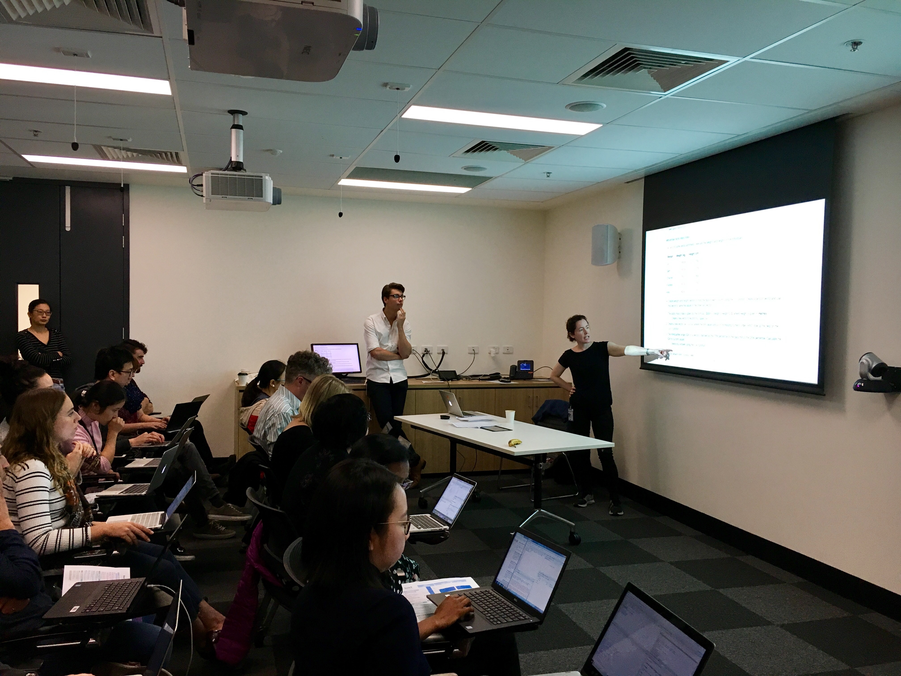
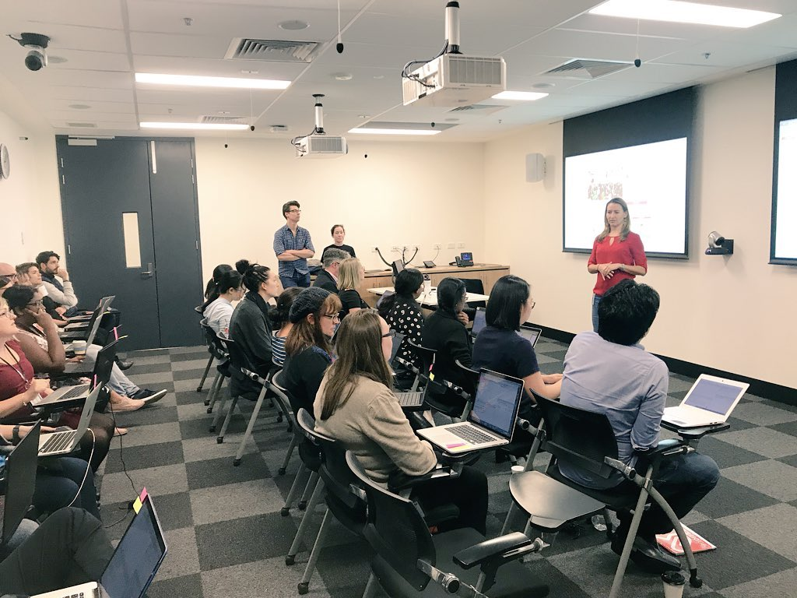
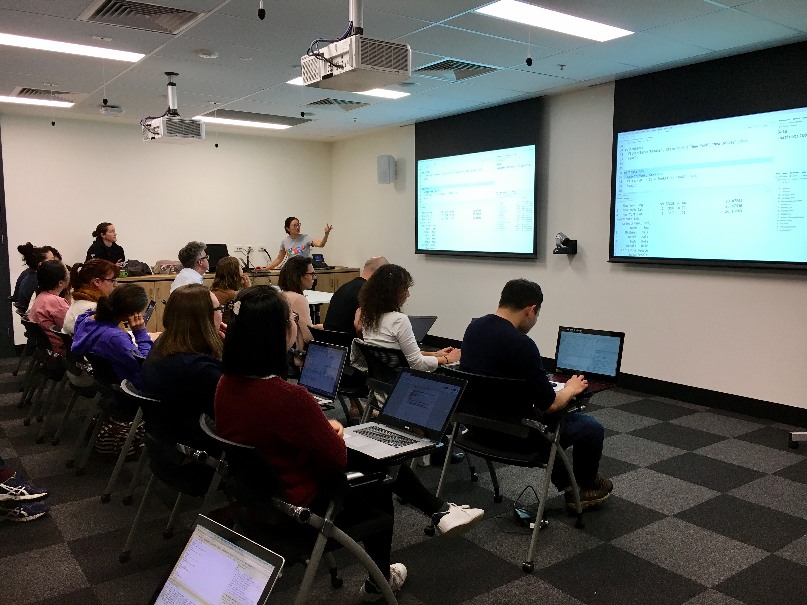

Current and upcoming Data Science courses at Peter Mac are listed below.
Courses managed by Peter Mac Data Science Training
(note upcoming dates are provisional and subject to change)- An Introduction to Solving Biological Problems with R (May 2018, July 2018)
- An Introduction to Solving Biological Problems with Python (Sep 2018)
- An Introduction to Solving Biological Problems with Galaxy (Oct 2018)
- Advanced R (late 2018/early 2019)